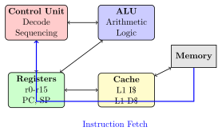
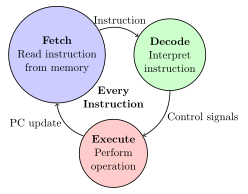
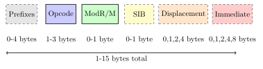
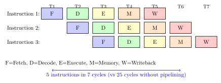

Chapter 7: CPU Execution & ISA: The Hardware/Software Interface¶
The Instruction Set Architecture (ISA) is the contract between software and hardware - the vocabulary through which programs communicate with processors. This chapter explores how CPUs execute instructions and how our high-level addition becomes concrete machine operations.
7.1 The Instruction Set Architecture¶
The ISA defines everything software needs to know about the processor: - Available instructions and their encodings - Registers and their purposes - Memory addressing modes - Data types and sizes - Exception and interrupt handling
7.2 Common ISAs¶
7.2.1 x86-64 (Intel/AMD)¶
- CISC (Complex Instruction Set Computer) - Variable-length instructions (1-15 bytes) - Rich addressing modes - Backwards compatible to 1978 - Dominates desktops and servers
7.2.2 ARM¶
- RISC (Reduced Instruction Set Computer) - Fixed-length instructions (32-bit in ARM, 16/32 in Thumb) - Load/store architecture - Energy efficient - Dominates mobile devices
7.2.3 RISC-V¶
- Open-source ISA - Modular design - Fixed 32-bit instructions (with 16-bit compressed) - Growing in embedded and academic use
Practical Example
Same Operation, Different ISAs:
Our addition result = a + b in different assembly languages:
; x86-64 (Intel syntax)
mov eax, [a] ; Load a into register eax
add eax, [b] ; Add b to eax
mov [result], eax ; Store eax to result
@ ARM assembly
ldr r0, =a @ Load address of a
ldr r1, [r0] @ Load value of a into r1
ldr r0, =b @ Load address of b
ldr r2, [r0] @ Load value of b into r2
add r3, r1, r2 @ Add r1 and r2, store in r3
ldr r0, =result @ Load address of result
str r3, [r0] @ Store r3 to result
# RISC-V assembly
lw t0, a # Load word from a into t0
lw t1, b # Load word from b into t1
add t2, t0, t1 # Add t0 and t1, store in t2
sw t2, result # Store t2 to result
7.3 CPU Components¶
A modern CPU contains several key components:

7.3.1 Registers: The CPU’s Workspace¶
Registers are the fastest storage in the computer:
| Register Type | Purpose | x86-64 Example | Access Time |
|---|---|---|---|
| General Purpose | Computation | RAX, RBX, RCX... | <1 cycle |
| Stack Pointer | Stack top | RSP | <1 cycle |
| Instruction Pointer | Next instruction | RIP | <1 cycle |
| Flags/Status | Condition codes | RFLAGS | <1 cycle |
| Segment | Memory segments | CS, DS, SS... | <1 cycle |
7.4 The Fetch-Decode-Execute Cycle¶
The fundamental operation of every CPU:

7.4.1 Detailed Cycle Steps¶
Solved Problem
Tracing an ADD Instruction
Problem: Trace the execution of ADD R1, R2, R3 (R1 = R2 + R3)
Solution:
// FETCH PHASE
1. Read Program Counter (PC): 0x1000
2. Send address 0x1000 to memory
3. Memory returns instruction: 0x00430820 (ADD R1, R2, R3)
4. Store instruction in Instruction Register (IR)
5. Increment PC to 0x1004
// DECODE PHASE
6. Decode instruction 0x00430820:
- Opcode: 000000 (R-type instruction)
- Rs: 00010 (R2)
- Rt: 00011 (R3)
- Rd: 00001 (R1)
- Function: 100000 (ADD)
7. Read R2 value: 15
8. Read R3 value: 25
// EXECUTE PHASE
9. ALU operation: 15 + 25 = 40
10. Write 40 to R1
11. Update flags if needed (overflow, zero, etc.)
12. Continue to next instruction (PC = 0x1004)
Timing: Modern CPUs can overlap these phases using pipelining, executing multiple instructions simultaneously at different stages.
7.5 Instruction Formats¶
7.5.1 x86-64 Instruction Encoding¶
x86-64 uses variable-length encoding:

7.5.2 RISC-V Instruction Formats¶
RISC-V uses fixed 32-bit formats:
// R-Type (Register-Register operations)
31 25 24 20 19 15 14 12 11 7 6 0
[ funct7 ] [ rs2 ] [ rs1 ] [f3] [ rd ] [ opcode ]
7 5 5 3 5 7 bits
// I-Type (Immediate operations)
31 20 19 15 14 12 11 7 6 0
[ immediate ] [ rs1 ] [f3] [ rd ] [ opcode ]
12 5 3 5 7 bits
// S-Type (Store operations)
31 25 24 20 19 15 14 12 11 7 6 0
[ imm ] [ rs2 ] [ rs1 ] [f3] [ imm ] [ opcode ]
7 5 5 3 5 7 bits
7.6 Pipelining: Parallel Execution¶
Modern CPUs pipeline instructions for throughput:

7.6.1 Pipeline Hazards¶
Three types of hazards can stall the pipeline:
Data Hazards¶
ADD R1, R2, R3 ; R1 = R2 + R3
SUB R4, R1, R5 ; R4 = R1 - R5 (needs R1 from previous instruction!)
Control Hazards¶
CMP R1, R2 ; Compare R1 and R2
BEQ label ; Branch if equal (don't know where to fetch next!)
Structural Hazards¶
Two instructions need the same hardware resource simultaneously.
7.7 Modern CPU Features¶
7.7.1 Superscalar Execution¶
Modern CPUs can execute multiple instructions per cycle:
// These independent instructions can execute simultaneously:
ADD R1, R2, R3 ; Uses ALU 1
MUL R4, R5, R6 ; Uses ALU 2
LOAD R7, [R8] ; Uses Load/Store Unit
// CPU with 2 ALUs and 1 Load/Store unit can do all three in parallel!
7.7.2 Out-of-Order Execution¶
CPUs can reorder instructions for efficiency:
// Original program order:
1: LOAD R1, [memory1] ; Slow - cache miss
2: ADD R2, R3, R4 ; Fast - no dependencies
3: MUL R5, R6, R7 ; Fast - no dependencies
4: ADD R8, R1, R9 ; Needs R1 from instruction 1
// Actual execution order:
1: LOAD R1, [memory1] ; Start load (takes many cycles)
2: ADD R2, R3, R4 ; Execute while waiting
3: MUL R5, R6, R7 ; Execute while waiting
4: ADD R8, R1, R9 ; Execute when R1 ready
7.7.3 Branch Prediction¶
CPUs predict branch outcomes to avoid stalls:
Real-World Analogy
Branch prediction is like predicting traffic patterns:
-
Static: "This road is usually busy at 5pm" (compile-time hints)
-
Dynamic: "It was busy yesterday and today, so probably tomorrow" (runtime history)
-
Speculative: "I’ll take the highway assuming it’s clear" (execute assuming prediction)
-
Recovery: "Traffic jam! Turn around and take surface streets" (misprediction penalty)
7.8 Memory Hierarchy¶
CPUs use multiple levels of cache to bridge the speed gap:
| Level | Size | Latency | Location |
|---|---|---|---|
| Registers | 1 KB | <1 cycle | CPU Core |
| L1 Cache | 32-64 KB | 3-4 cycles | CPU Core |
| L2 Cache | 256-512 KB | 10-20 cycles | CPU Core |
| L3 Cache | 8-32 MB | 30-40 cycles | CPU Die |
| Main Memory | 8-64 GB | 100-300 cycles | DIMM |
| SSD | 256GB-2TB | 10,000+ cycles | PCIe/SATA |
| HDD | 1-20 TB | 1,000,000+ cycles | SATA |
Practical Example
Cache Performance Impact:
// Cache-friendly: Sequential access
int sum = 0;
for (int i = 0; i < N; i++) {
sum += array[i]; // Accesses memory sequentially
}
// Cache-unfriendly: Random access
int sum = 0;
for (int i = 0; i < N; i++) {
sum += array[random()
}
// Performance difference can be 10-100x!
7.9 SIMD: Single Instruction, Multiple Data¶
Modern CPUs can operate on multiple data items simultaneously:
// Traditional (4 instructions):
result[0] = a[0] + b[0];
result[1] = a[1] + b[1];
result[2] = a[2] + b[2];
result[3] = a[3] + b[3];
// SIMD (1 instruction):
__m128 va = _mm_load_ps(a); // Load 4 floats
__m128 vb = _mm_load_ps(b); // Load 4 floats
__m128 vr = _mm_add_ps(va, vb); // Add all 4 pairs at once!
_mm_store_ps(result, vr); // Store 4 results
7.10 Real CPU Example: Intel Core i7¶
Let’s examine a real modern processor:
Architecture: x86-64
Cores: 8 physical (16 logical with Hyper-Threading)
Pipeline Depth: 14-19 stages
Issue Width: 4-6 micro-ops per cycle
Execution Units:
- 4 Integer ALUs
- 2 Vector ALUs
- 2 Load units
- 1 Store unit
Caches:
- L1I: 32KB per core (instruction)
- L1D: 32KB per core (data)
- L2: 256KB per core
- L3: 16MB shared
Clock Speed: 3.6 GHz base, 5.0 GHz turbo
Transistors: ~2 billion
7.11 Exercises¶
Exercise for You
Exercise 7.1: Assembly Programming
Write assembly code (choose x86-64, ARM, or RISC-V) to: 1. Calculate factorial of 5 2. Find maximum in an array 3. Implement bubble sort 4. Count set bits in a number
Measure cycle counts and compare with C versions.
Exercise for You
Exercise 7.2: Pipeline Simulation
Create a pipeline simulator that: 1. Models a 5-stage pipeline 2. Detects data hazards 3. Implements forwarding 4. Handles branch prediction 5. Reports CPI (Cycles Per Instruction)
Test with various instruction sequences.
Exercise for You
Exercise 7.3: Cache Analysis
Write programs to: 1. Measure L1, L2, L3 cache sizes 2. Determine cache line size 3. Demonstrate cache thrashing 4. Compare row-major vs column-major matrix access 5. Measure memory bandwidth
7.12 Chapter Summary¶
The CPU executes our programs through a sophisticated dance of:
-
ISA: The language CPUs understand
-
Fetch-Decode-Execute: The fundamental cycle
-
Pipelining: Parallel instruction processing
-
Superscalar: Multiple instructions per cycle
-
Out-of-order: Dynamic instruction scheduling
-
Caching: Fast memory hierarchy
-
SIMD: Data-parallel operations
Our simple addition, now an ADD instruction in the CPU, might execute in less than a nanosecond on a modern processor, potentially in parallel with other operations, with its operands predicted and prefetched before needed.
Key Takeaway
Key Insight: Modern CPUs are marvels of engineering that maintain the illusion of simple sequential execution while actually performing incredibly complex parallel operations. The ISA is the stable interface that allows this complexity to evolve without breaking software compatibility.
Next: Chapter 8 - Microoperations: Breaking Down Instructions